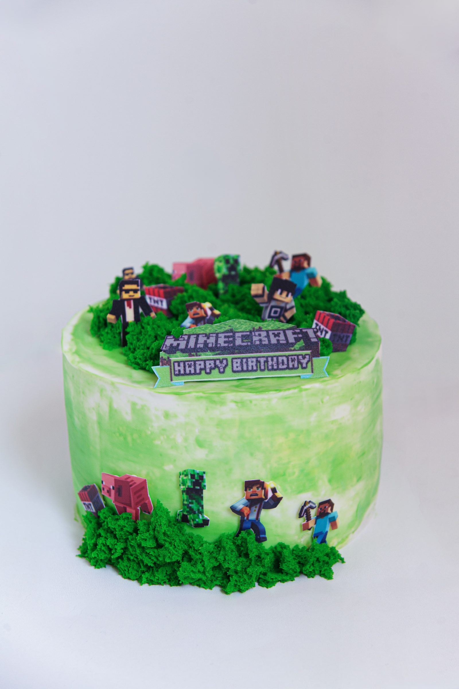

№ 1

Торт
Бисквит с ягодами
Лёгкий воздушный бисквит со свежими ягодами и кремом — из тех тортов, что готовишь на выходных, когда никуда не торопишься. Получился именно такой, каким и задумывался: нежный и не приторный.